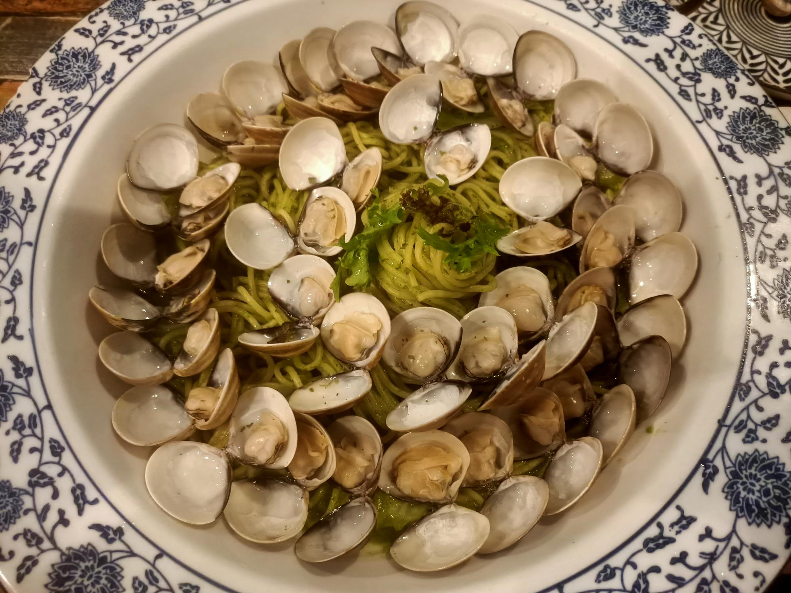
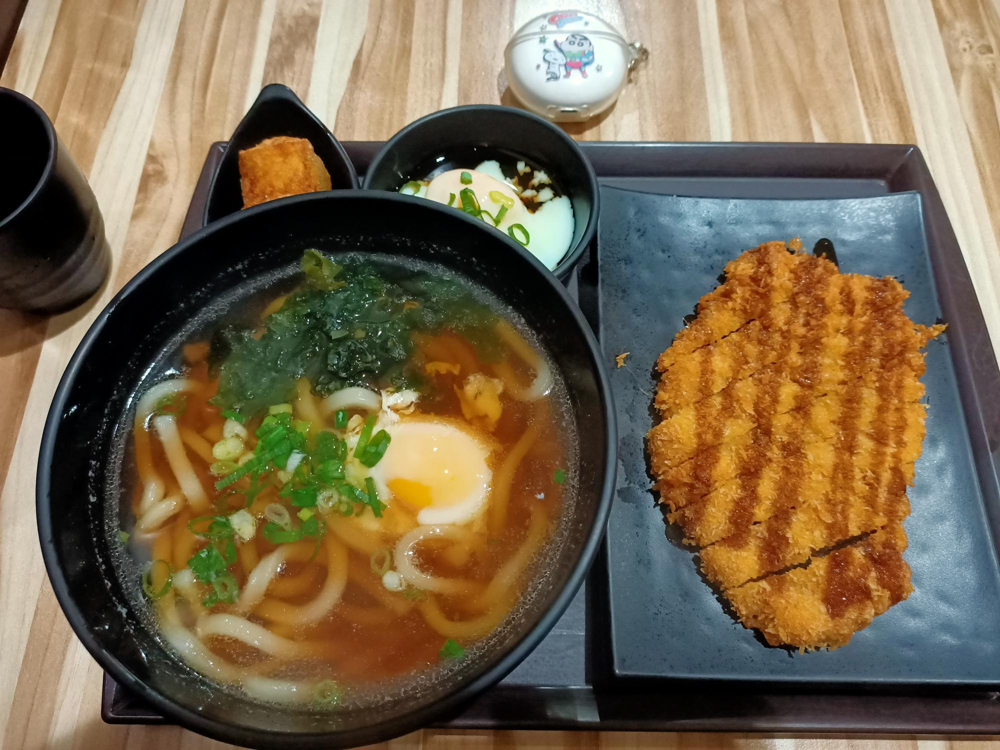
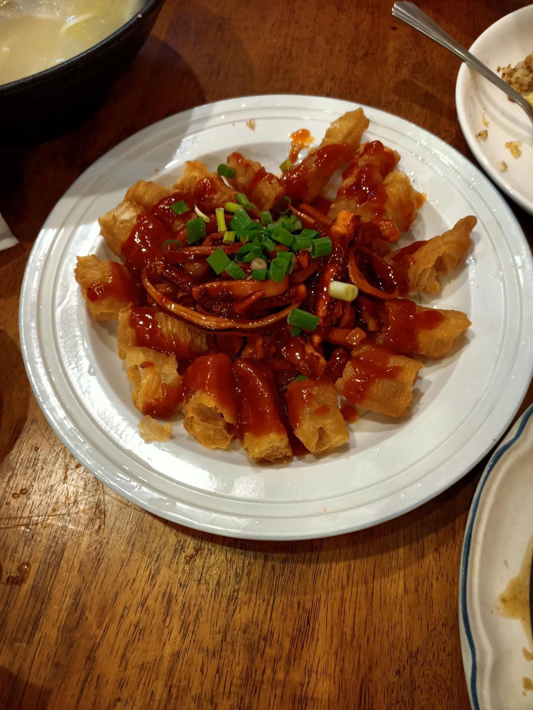

NO.1

青醬蛤蜊義大利麵(臺中西屯)
店位於台中市西屯區逢甲商圈，是一家以義大利麵為主打的餐廳，店內裝潢簡單舒適，餐點價格親民，份量加大不加價，蛤蠣也給很多，完全不怕你吃的那種，性價比相當的高。

NO.2
日式炸豬排烏龍麵定食(臺北士林)
店位於台北市士林區天母商圈，是一家以日式套餐料理為主打的餐廳，鄰近天母棒球場，以天母附近來說餐點價格算蠻便宜的，很適合進場看球前來吃飯的餐廳，強烈推薦日式炸豬排烏龍麵。

NO.3
糖醋魷魚(苗栗南庄)
店位於苗栗縣南庄鄉南庄老街，是一家以客家菜及家常功夫菜聞名的餐廳，店內什錦麵、鮭魚炒飯、糖醋魷魚，我認為是這裡必點，餐點價格親民，是一家適合全家人一起用餐的餐廳。